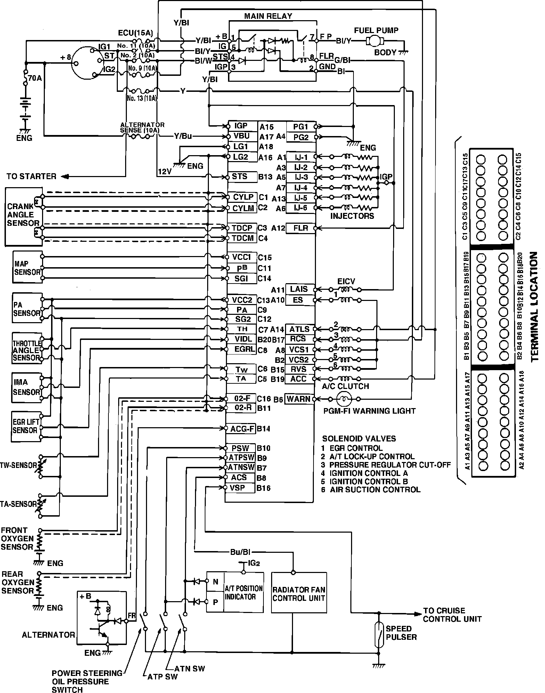

Operation CHARM
: Car repair manuals for everyone.
Home
>>
Acura
>>
1986
>>
Legend V6-2494cc 2.5L SOHC FI
>>
Repair and Diagnosis
>>
Powertrain Management
>>
Relays and Modules - Powertrain Management
>>
Relays and Modules - Computers and Control Systems
>>
Engine Control Module
>>
Diagrams
Engine Control Module: Diagrams
Fig. 31 PGM-FI System Wiring Schematic.:
